Ilana Williams
Clips
Charles club commemorates first radio transmission 125 years ago
Sounds of digital communications and trying to make contact with other amateur radio operators could be heard around Cobb Island last week on Dec. 23 during a special event.
Click here to read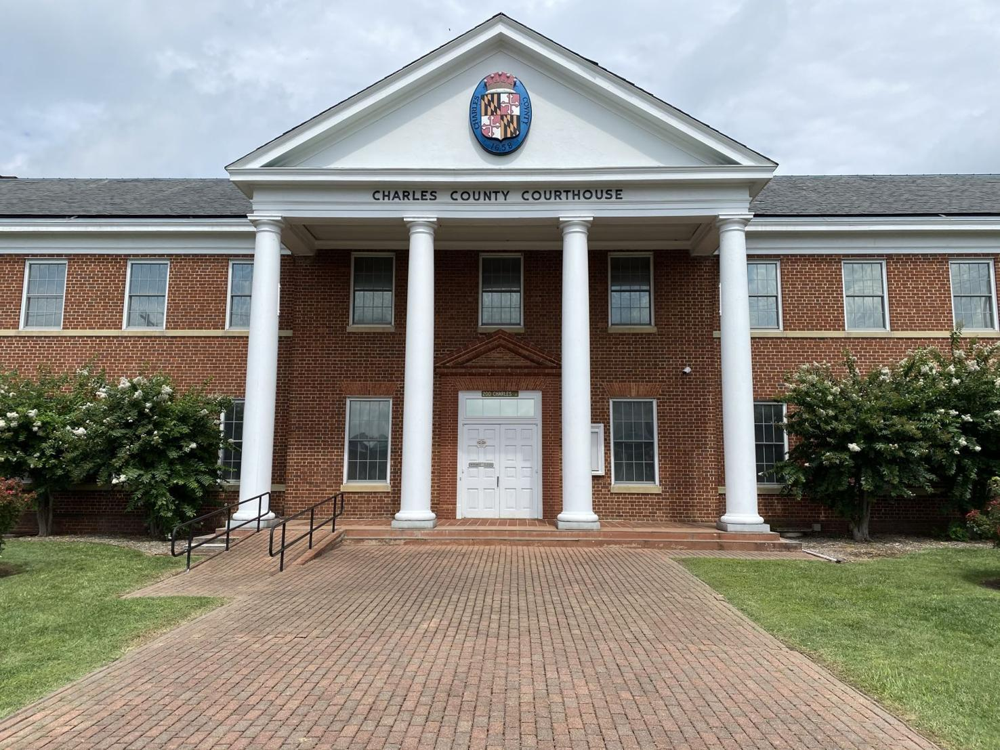
Waldorf man found guilty for second-degree murder during forklift theft
A Charles County jury, after a seven-day trial, found a 22-year-old Waldorf man guilty of second-degree murder for killing a 73-year-old woman during a forklift theft.
Click here to read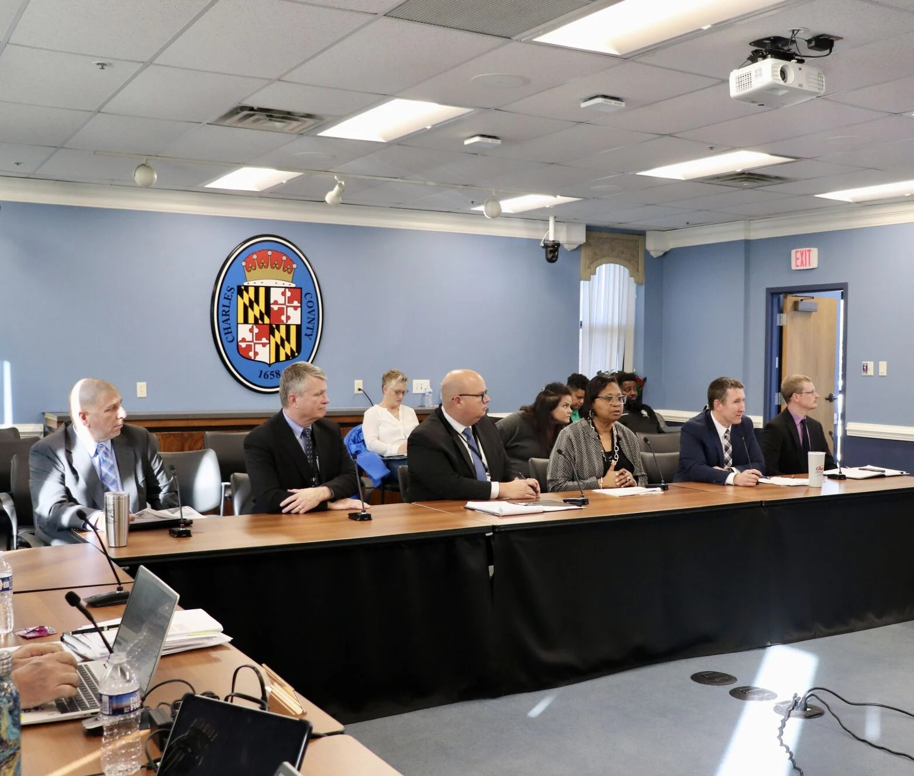
More funding is approved for Charles sports and wellness center
The Charles commissioners approved a budget transfer of $150,000 on Tuesday for a market and financial feasibility study for the sports and wellness center set to be built in Waldorf.
Click here to read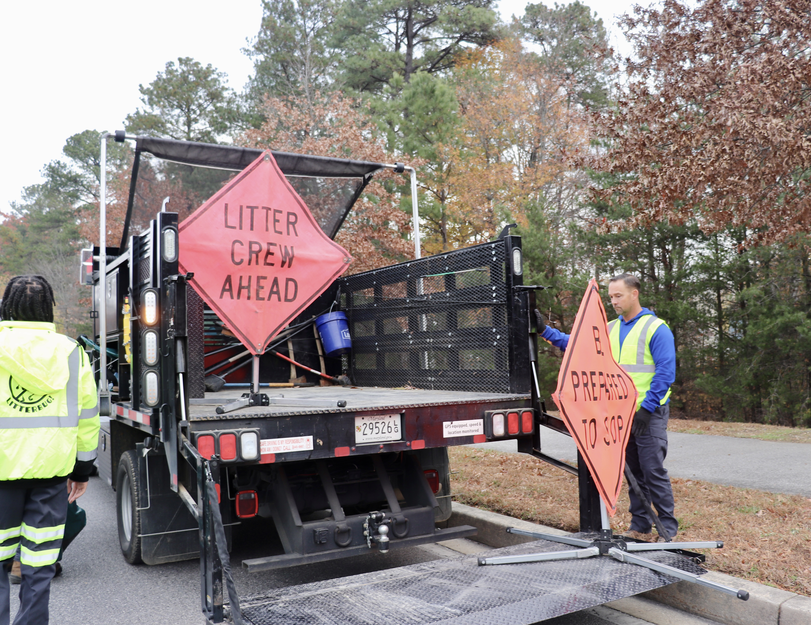
Keeping it clean: Counties look to combat litter with enforcement, education
While Southern Maryland experiences littering and illegal dumping, each county monitors and handles the calls and complaints differently
Click here to read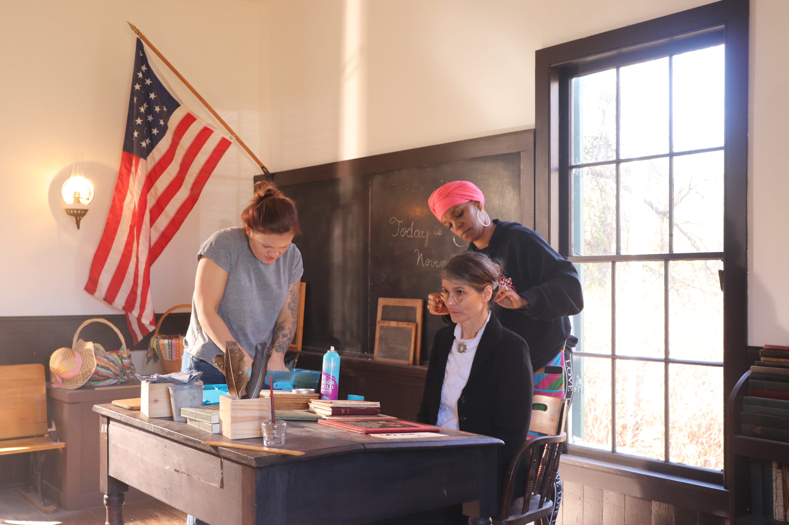
Documentary to showcase deadly 1926 La Plata tornado
Maryland Motion Pictures and the Port Tobacco Players filmed at the schoolhouse with cast members from the local theater troupe on Nov. 8 and Nov. 9 for the documentary about the Nov. 9, 1926, tornado that struck the La Plata Elementary School.
Click here to read
Sisters reminisce, pepare for church dinner in Accokeek
Christ Church is holding its 100th annual Ham and Oyster Dinner on Saturday, Nov. 22, from noon to 6 p.m.
Click here to read
Charles board of education, delegation discuss legislative priorities
Two main priorities were on the agenda: improving information between juvenile services agencies and addressing funding challenges with the Blueprint for Maryland's future.
Click here to read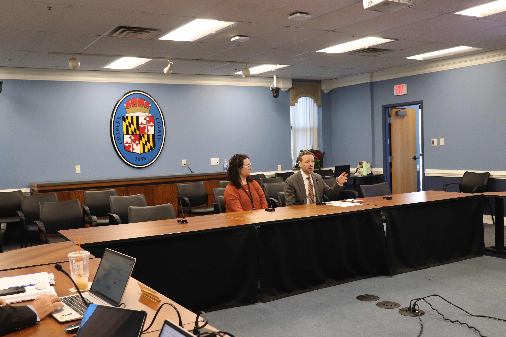
Projects in the pipeline to increase water supply in Charles
Charles County is working on short-term and long-term water projects to increase the county’s water supply in the northern part of the county.
Click here to read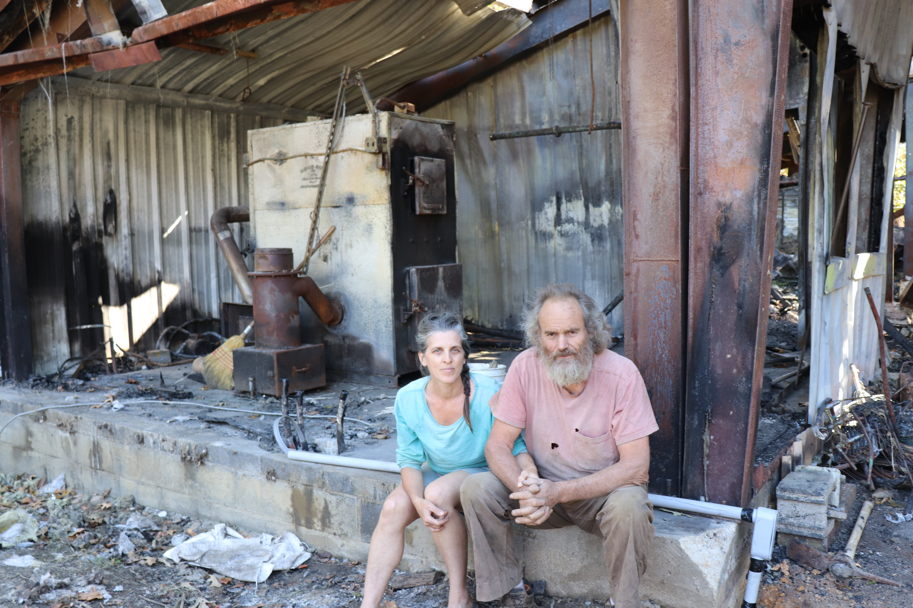
Newburg farm continues after fire, silent auction set to begin
The first thing to greet you at Next Step Produce in Newburg is a dog named Noisette, French for Hazelnut.
Click here to read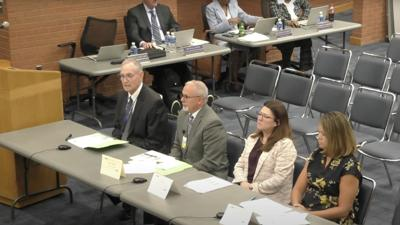
Charles public schools MCAP English scores remain lower than state
Charles public schools saw nearly a 10% increase in English language arts for 10th grade, but remained lower than the state average on standardized tests last school year.
Click here to readFew Charles high schoolers pass Algebra I test
Only one in 20 high school students enrolled in Algebra I last school year passed the state’s standardized test for that class.
Click here to read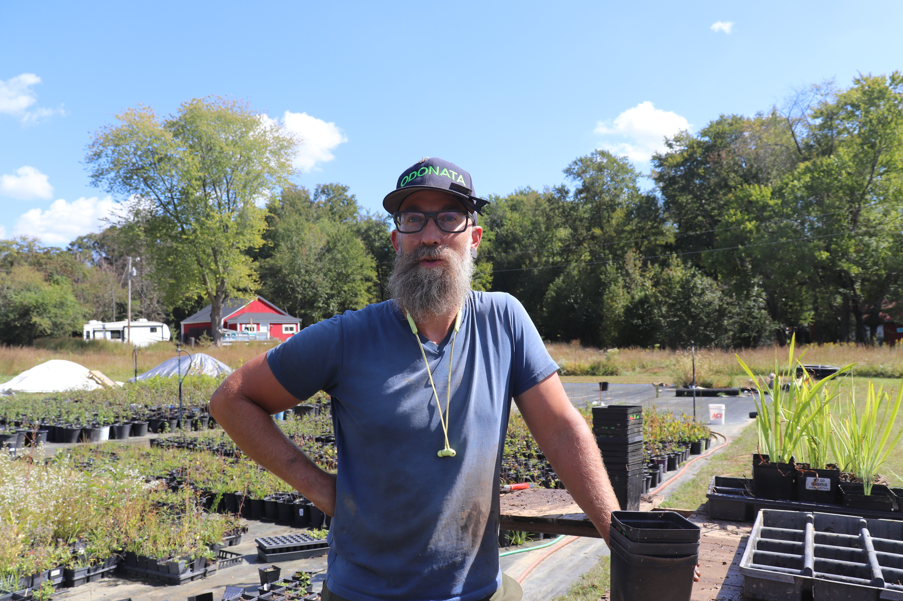
One seedling at a time: Nonprofit gives away native plants, empowers youth
Esther Bonney turned her grief into growth by starting a nonprofit that aims to spread native plants.
Click here to read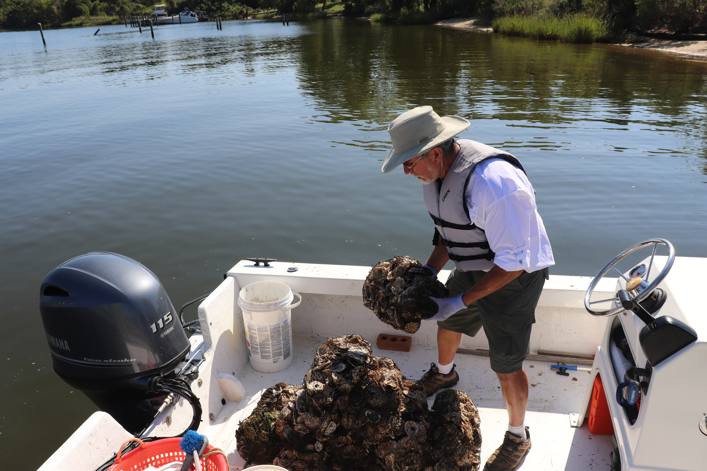
St. Mary's watershed group, volunteers plant one million oysters
Since 2017, St. Mary’s River Watershed Association and Friends of St. Clement’s Bay have been working to rebuild a healthy oyster population in the bay located within St. Mary’s County off the Potomac River
Click here to read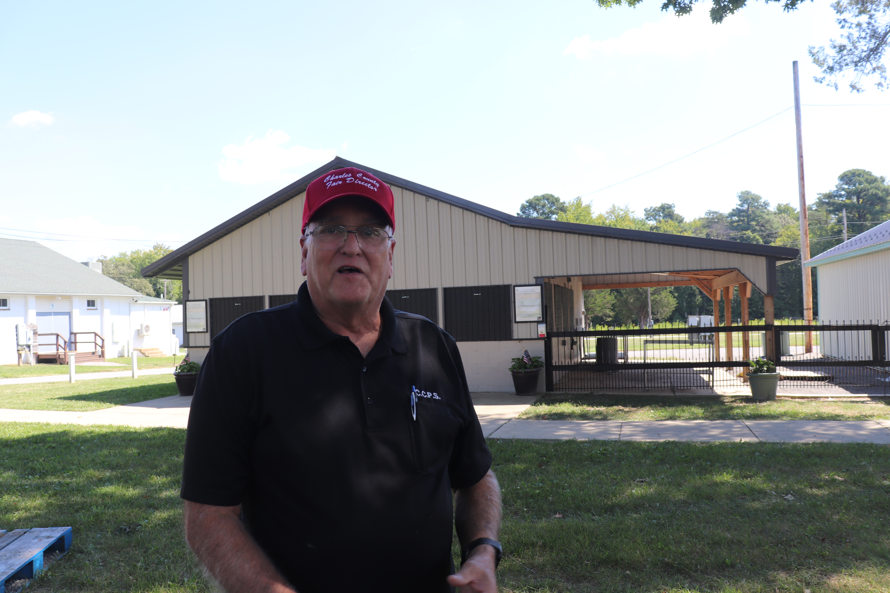
Charles fair has new food, finalizes renovations
For some, a county fair can be summed up like this: Hundreds of volunteers, a few paid staff and a lot to see in four days.
Click here to read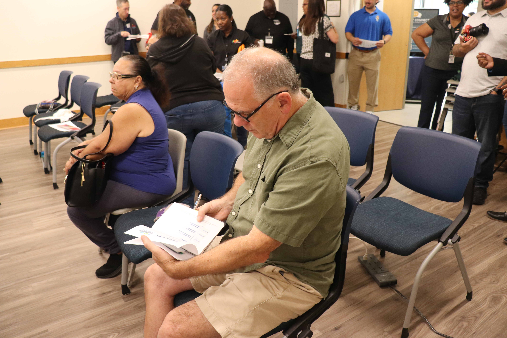
Bryans Road residents weigh in on community initiative
Bryans Road residents crowded a meeting room Saturday morning at the Potomac Branch Library in Indian Head to discuss improvements for the community.
Click here to read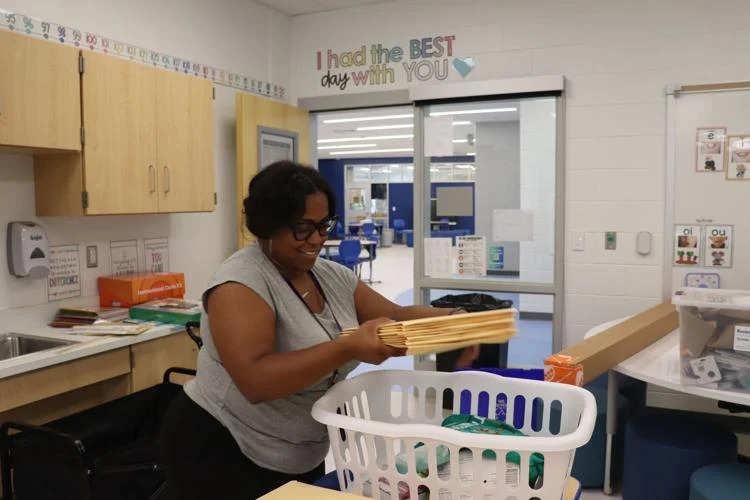
New Charles elementary school set to open
Next Monday, Aug. 25, the anticipation should ease once the doors are opened for students at the new Margaret Jamieson Thornton Elementary School along with all of the other Charles public schools.
Click here to readCharles school system considers AI in district
In June 2024, the school system created a task force to discuss AI resources and policies to determine what could be used in schools.
Click here to read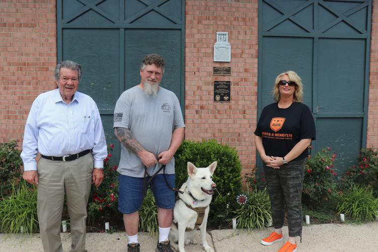
Memorial in Newburg to be dedicated to veteran service dogs
Chewy was meant to be his wife’s dog but since Chewy was already attached to Piaquadio, he got the dog trained at Semper K9 Assistance Dogs in Quantico, Va. For five years, Chewy has been with Piaquadio in public places and in his passenger seat on his motorcycle.
Click here to read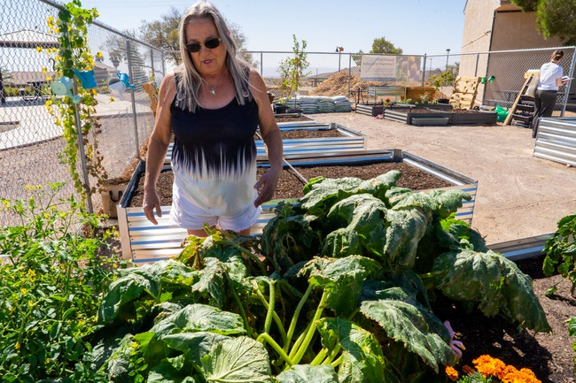
Legislation plants seeds for community gardens statewide
Assembly Bill 405 would shift from fragmented local approaches to a coordinated statewide strategy with dedicated programs and resources aimed at expanding food access.
Click here to read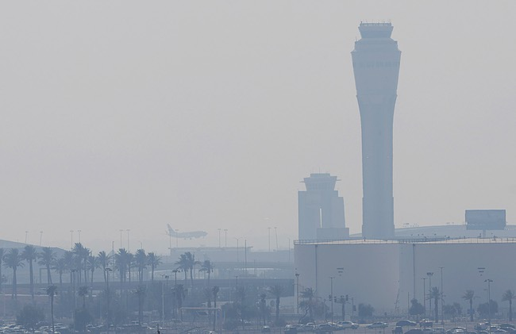
Nevada lawmakers consider bill to protect workers from poor air quality
A proposal before the Nevada Legislature aims to establish protections for outdoor workers during periods of hazardous air quality caused by increasing wildfire activity throughout the region.
Click here to read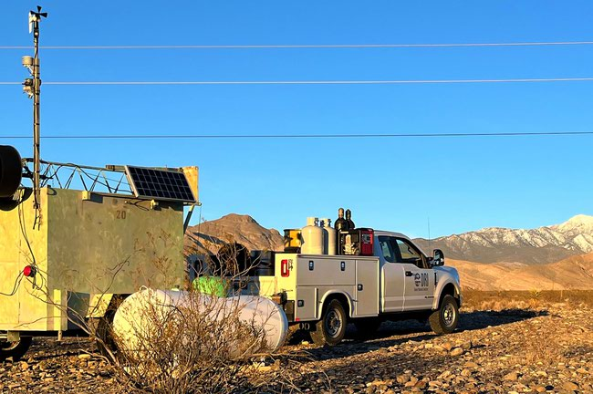
How much is rain worth? Nevada lawmakers weigh continued funding for Desert Research Institute’s cloud seeding program
Last session, lawmakers approved Senate Bill 99 to allocate $1.2 million to the program from 2023 to 2025. The current proposal, Senate Bill 6, would maintain funding levels for the 2025-2027 biennium.
Click here to read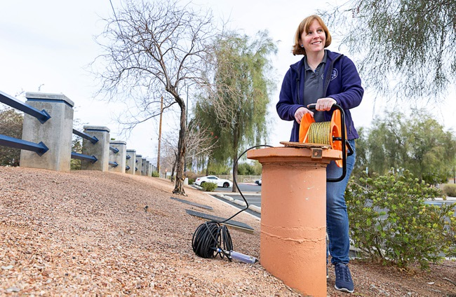
Stability of well water levels in Las Vegas may be cause for optimism
Groundwater wells in Southern Nevada have maintained stable water levels over the past two years, officials said.
Click here to readNevada bill would keep water rights buybacks going through 2035
A proposal being considered in the Nevada Legislature would allow the state to continue buying back water rights from willing sellers to conserve water.
Click here to readLas Vegas’ long dry spell ends with rains today
Las Vegas today broke its second-longest dry spell in history, as rain fell across the valley.
Click here to read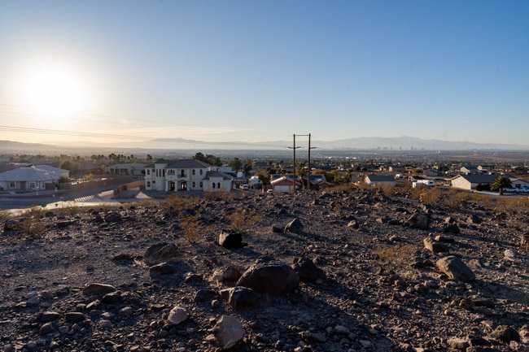
2023 Nevada law on septic systems turns plans for dream homes into nightmares
The secluded property is nearly 2,600 feet away from the city of Henderson sewer system, and the family estimates it would cost $500,000 to extend sewer service.
Click here to read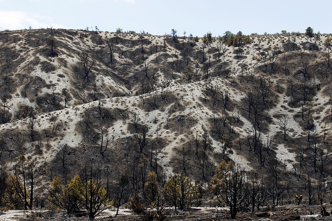
Nevada officials stress being proactive to prevent wildfires
When a wildfire occurs in Nevada, BLM and other federal agencies, like the Nevada Division of Forestry, are called in to investigate.
Click here to read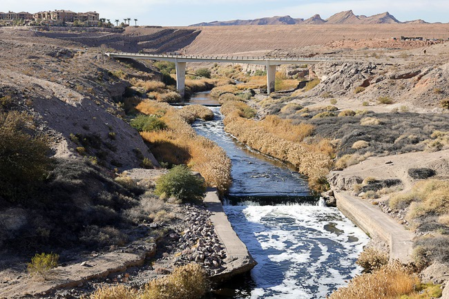
$2.6M project to reduce erosion on Las Vegas Wash to begin in January
The weirs have been overtaken by vegetation, with plants growing on them that can cause cracks along concrete and ultimately affecting water quality.
Click here to read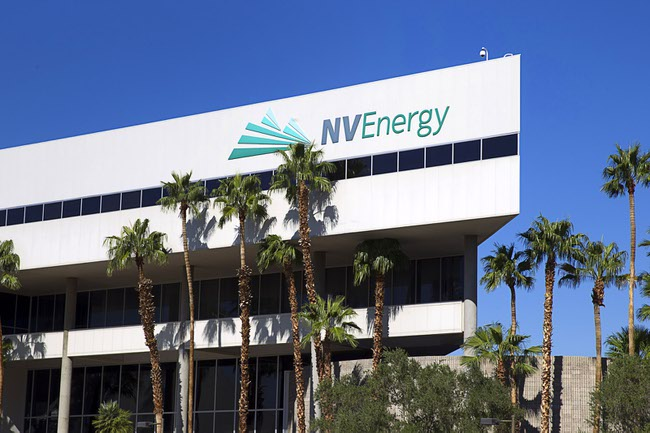
NV Energy's plan approved for $573 million natural gas plant in Humboldt County
The plan calls for methane gas units of around 400 megawatts at the North Valmy Generating Station
Click here to readColorado River talks tackle users’ competing water demands
Climate change and explosive growth in the region have introduced new variability and instability that was not affecting the river when the 1922 Colorado River Compact was signed.
Click here to read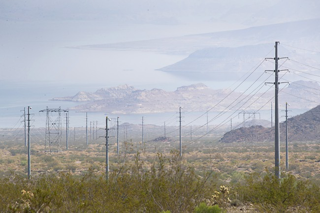
Clark County strives to meet clean-air standards with updated ozone emissions plan
Air quality has improved considerably in Clark County from as recently as 2008 but worsened enough over the recent past that county officials have submitted an updated plan.
Click here to read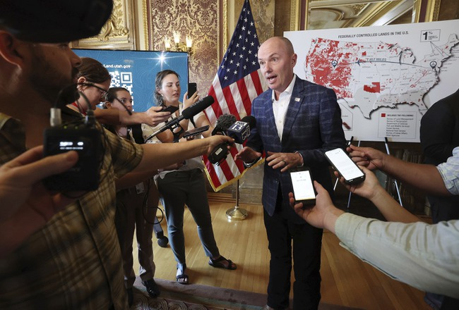
Could ruling in Utah case set precedent for Nevada to take ownership of public land?
A billboard in support of Utah’s lawsuit challenging federal control over Bureau of Land Management land in the state hangs over Interstate 15 from Las Vegas to Salt Lake City.
Click here to readNevada extends agreement to help combat risk of wildfires
A conservation agreement aimed at reducing the risk and impact of catastrophic wildfires in Nevada has been extended.
Click here to readCommunity garden in Clark County town cultivates connections and produce
The community garden in here grows magic. Not really, but residents of the southern Clark County town like to think so.
Click here to readHarvesting water from air, UNLV engineer’s device could have global appeal
Southern Nevada relies heavily on the Colorado River, with 90% of the city’s water coming from it, and supplies 40 million people with water across the Lower Colorado Basin.
Click here to read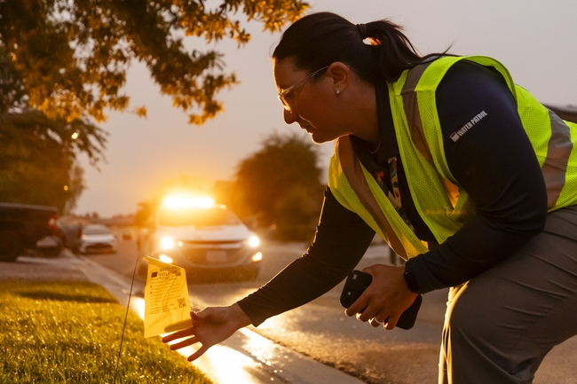
Compliance investigators keep eyes peeled for water waste violations in Las Vegas
The water patrol launched in 2002, when Nevada used more than its allocated 300,000 acre-feet of water and the Colorado River experienced its lowest inflow.
Click here to read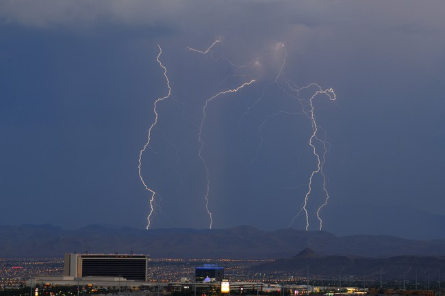
Las Vegas has had unusually dry monsoon season
The season, which runs from June through mid-September, has dropped just 0.08 inches of rain here, according to the National Weather Service.
Click here to readMaryland’s push to phase out gas-powered car sales by 2035
According to the Maryland Department of Transportation, the state has seen an increase in electric vehicles every year.
Click here to readMontgomery County Reports Community Electric Vehicle Charging Survey
Switching from gasoline to electric vehicles is one of the most impactful actions that residents can take to reduce greenhouse gas emissions and help Montgomery County reach its climate goals.
Click here to read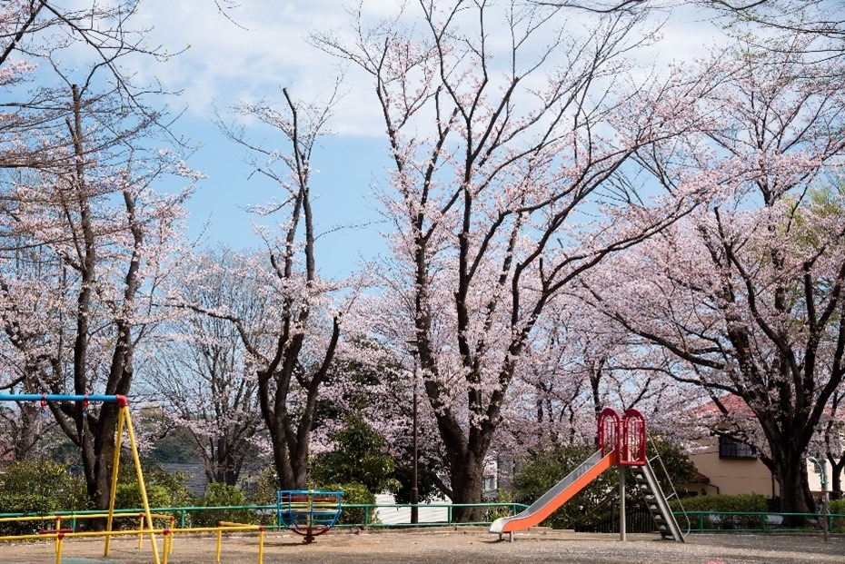
Montgomery Parks Works on Energy Efficient Projects
Montgomery County approved a bill in 2022 to move away from fossil fuels in new buildings
Click here to readUMD Filipino community voices support for GWU nurse fired over unionization efforts
The termination cut deep for many members of this university’s Filipino community given its history in the nursing profession.
Click here to read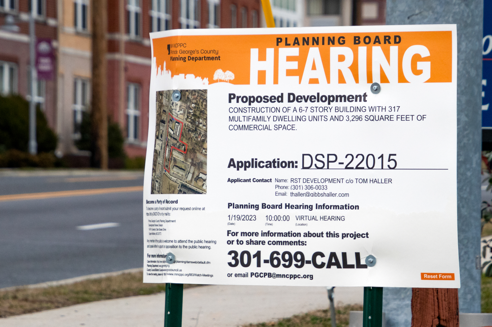
New affordable housing is coming to College Park in 2025
The current median household income in College Park is $69,736. The federal Low-Income Housing Tax Credit program subsidized the apartments, so rent is based on area median income and state-determined rent control rates
Click here to read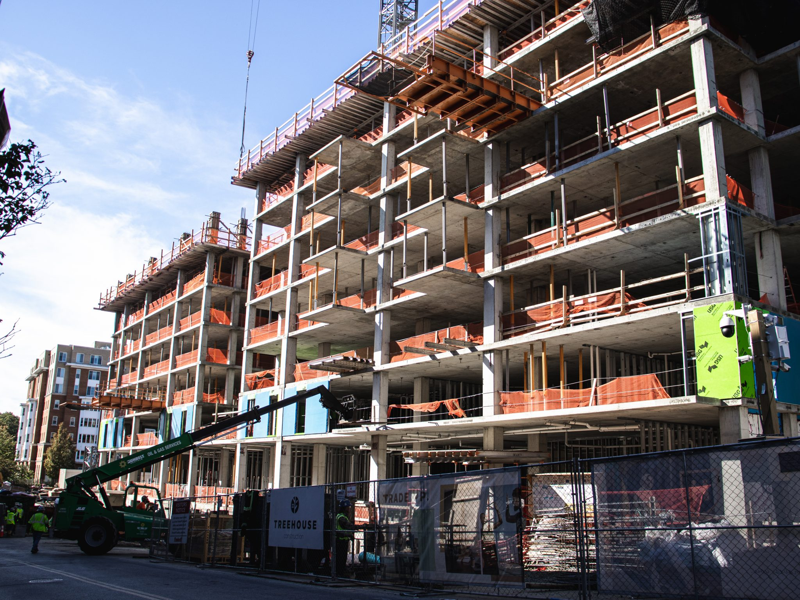
Knox Road is almost always noisy — and UMD students have had enough
Several major private construction projects with hundreds of student-focused apartments on Knox Road are well underway.
Click here to read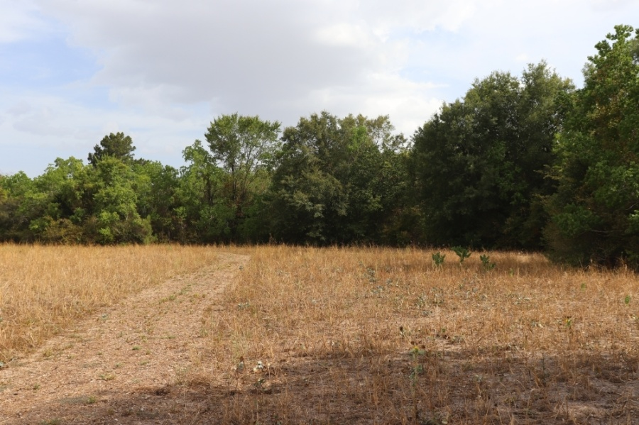
Katy ISD’s ‘student-focused’ Tiger Prairie organizes education initiatives after relocation, drought
After starting a prairie four years ago at Katy High School, educators have upcoming initiatives to further student involvement.
Click here to readTxDOT plans for more electric vehicle charging stations; Houston starts the process
To support the growth of electric vehicles, Houston is addressing air quality concerns and long-term funding strategies for electric vehicles and charging stations.
Click here to read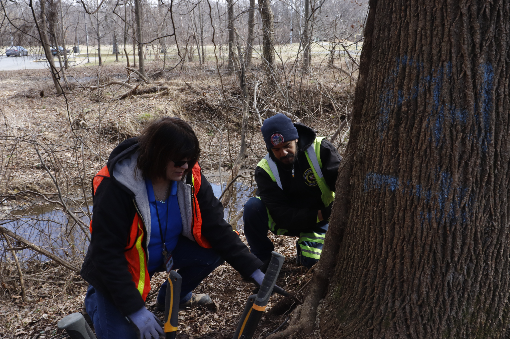
City arborist and volunteers tackle invasive species one park at a time
A crew of volunteers tend trees and tackle invasive species at Driskell Park.
Click here to read